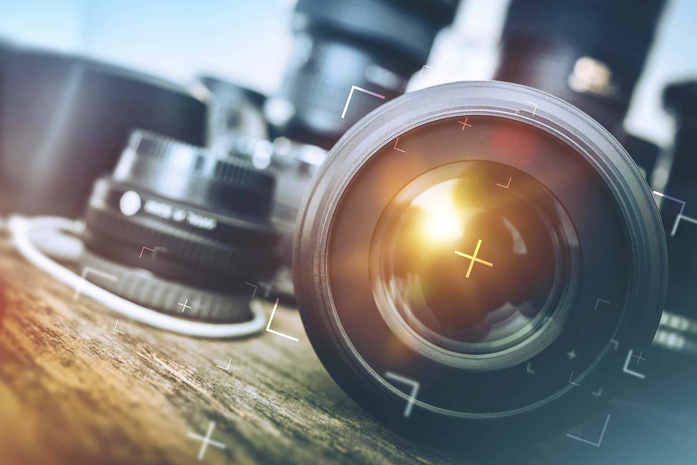
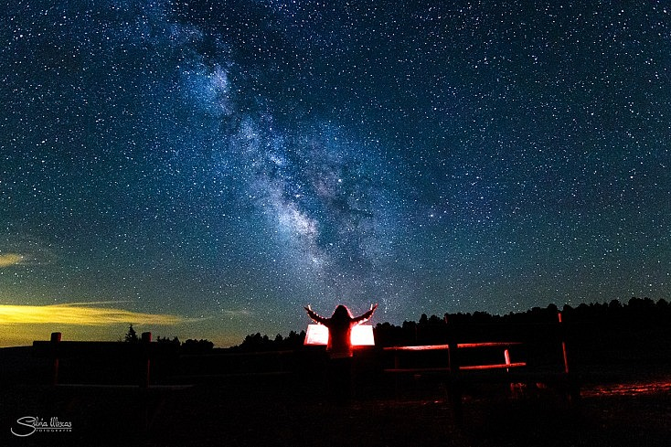

-

La Fotografía
-

La Fotografía
-

La Fotografía
La fotografía en la actualidad
En este mundo digital en el que todos vivimos, la fotografía ha llegado a unos niveles nunca imaginados hasta hace pocos años. Lo que más se puede destacar es la disponibilidad casi inmediata de tener las imágenes, cosa que nos permite mejorar enormemente los procesos técnicos y creativos. Hoy en día tenemos la posibilidad de captar imágenes en cualquier momento, sin olvidarnos de la facilidad que tenemos para ver, procesar e imprimir las fotografías y con ello tener el control absoluto desde principio hasta el fin.
Pero hay muchos aspectos de la fotografía que no han cambiado y casi todos están relacionados con el contenido de las imágenes. Ahora todo el mundo juega con las cámaras, fotografiando todo lo que le rodea, aunque esto no esté de ningún modo relacionado con la ilusión de colgarse una cámara del cuello y salir a buscar escenas interesantes. Tenemos una sobresaturación de imágenes de flores, arquitectura y paisajes sin nada especial, y con esto lo que quiero decir es que tener una cámara en tus manos no te convierte en fotógrafo.

El gran desconocimiento que hay de las reglas de composición, de la narrativa visual y de la historia de la fotografía, unidas a la posibilidad de tomar fotos en cualquier momento hace que la inmensa mayoría de las imágenes que vemos tengan una muy baja calidad de contenido aunque esté nítida y bien resuelta automáticamente por la tecnología utilizada.
La fotografía tiene más que ver con la mirada del fotógrafo y sus conocimientos fotográficos que con los medios que use para tomar la imagen y sobre todo, tiene mucha relación con la captura y los momentos que rodean el instante de pulsar el obturador. El mundo de la fotografía es un cúmulo de oportunidades para crear imágenes personales.
La fotografía crea una unión con el mundo real delante de la cámara y lo transforma en una imagen única para el usuario y su particular visión de ella. Por eso cada fotógrafo llega a desarrollar un estilo propio, porque ante una misma escena, la imagen final tendrá, sin duda, su sello personal. En definitiva, si hay algo que la tecnología no puede suplir es la mirada del fotógrafo.
Pero todo no va a ser malo, lo bueno de tener una tecnología así es que nos da la posibilidad de ser más creativos y productivos, y llegar a niveles que hasta hace poco eran impensables. Por lo que si unimos conocimientos y tecnología el resultado que podemos llegar a obtener es simplemente fantástico.
Así de lo que se trata es de formarse adecuadamente y usar los medios disponibles de forma adecuada y creativa para ser un gran creador de imágenes impactantes, con dedicación y sobretodo mucha práctica todo el mundo puede convertirse en un gran fotógrafo.